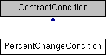
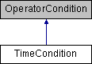
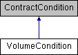

Introduction
This section provides an approximate class reference for all of the TWS API classes referenced throughout the primary documentation pages.
Please be aware this content is currently in Beta and we are moving to further elaborate on all of these data points in the near future.
Bar Class Reference
The historical data bar’s description.
| Name | Type | Description |
|---|---|---|
| Time | string | The bar’s date and time (either as a yyyymmss hh:mm:ss formatted string or as system time according to the request). Time zone is the TWS time zone chosen on login. |
| Open | double | The bar’s open price. |
| High | double | The bar’s high price. |
| Low | double | The bar’s low price. |
| Close | double | The bar’s close price. |
| Volume | decimal | The bar’s traded volume if available (only available for TRADES) |
| Count | int | The number of trades during the bar’s timespan (only available for TRADES) |
| WAP | decimal | The bar’s Weighted Average Price (only available for TRADES) |
ComboLeg Class Reference
Class representing a leg within combo orders.
| Name | Type | Description |
|---|---|---|
| ConId | int | The Contract’s IB’s unique id. |
| Ratio | int | Select the relative number of contracts for the leg you are constructing. To help determine the ratio for a specific combination order |
| Action | string | The side (buy or sell) of the leg: For individual accounts, only BUY and SELL are available. SSHORT is for institutions. |
| Exchange | string | The destination exchange to which the order will be routed. |
| OpenClose | int | Specifies whether an order is an open or closing order. For institutional customers to determine if this order is to open or close a position. 0 – Same as the parent security. This is the only option for retail customers. 1 – Open. This value is only valid for institutional customers. 2 – Close. This value is only valid for institutional customers. 3 – Unknown. |
| ShortSaleSlot | int | For stock legs when doing short selling. Set to 1 = clearing broker, 2 = third party |
| DesignatedLocation | string | When ShortSaleSlot is 2, this field shall contain the designated location. |
| ExemptCode | int | Mark order as exempt from short sale uptick rule. Possible values: 0 – Does not apply the rule. -1 – Applies the short sale uptick rule. |
Public Member Functions
| Name | Type | Description |
|---|---|---|
| SAME = 0 | static int | Same as the parent security. This is the only option for retail customers. |
| OPEN = 1 | static int | Open. This value is only valid for institutional customers. |
| CLOSE = 2 | static int | Close. This value is only valid for institutional customers. |
| UNKNOWN = 3 | static int | Unknown |
CommissionAndFeesReport Class Reference
Class representing the commissions and fees generated by an execution.
| Name | Type | Description |
|---|---|---|
| ExecId | string | the execution’s id this commission belongs to. |
| CommissionAndFees | double | the combined cost of commissions and fees. |
| Currency | string | The currency denoting the value of the commissionAndFees. |
| RealizedPNL | double | the realized profit and loss |
| Yield | double | The income return. |
| YieldRedemptionDate | int | date expressed in yyyymmdd format. |
Public Member Functions
| Name | Type | Description |
|---|---|---|
| Equals (object obj) | override bool | |
| GetHashCode () | override int |
Contract Class Reference
Class describing an instrument’s definition.
| Name | Type | Description |
|---|---|---|
| ConId | int | The unique IB contract identifier. |
| Symbol | string | The underlying’s asset symbol. |
| SecType | string | The security’s type: STK – stock (or ETF) OPT – option FUT – future IND – index FOP – futures option CASH – forex pair BAG – combo WAR – warrant BOND- bond CMDTY- commodity NEWS- news FUND- mutual fund. |
| LastTradeDateOrContractMonth | string | The contract’s last trading day or contract month (for Options and Futures). Strings with format YYYYMM will be interpreted as the Contract Month whereas YYYYMMDD will be interpreted as Last Trading Day. |
| LastTradeDate | string | The contract’s last trading day. |
| Strike | double | The option’s strike price. |
| Right | string | Either Put or Call (i.e. Options). Valid values are P, PUT, C, CALL. |
| Multiplier | string | The instrument’s multiplier (i.e. options, futures). |
| Exchange | string | The destination exchange. |
| Currency | string | The underlying’s currency. |
| LocalSymbol | string | The contract’s symbol within its primary exchange. For options, this will be the OCC symbol |
| PrimaryExch | string | The contract’s primary exchange. For smart routed contracts, used to define contract in case of ambiguity.Should be defined as native exchange of contract. For exchanges which contain a period in name, will only be part of exchange name prior to period, i.e. ENEXT for ENEXT.BE |
| TradingClass | string | The trading class name for this contract. Available in TWS contract description window as well. For example, GBL Dec ’13 future’s trading class is “FGBL” |
| IncludeExpired | bool | If set to true, contract details requests and historical data queries can be performed pertaining to expired futures contracts. Expired options or other instrument types are not available. |
| SecIdType | string | Security’s identifier when querying contract’s details or placing orders ISIN – Example: Apple: US0378331005 CUSIP – Example: Apple: 037833100. |
| SecId | string | Identifier of the security type. More… |
| Description | string | Description of the contract. |
| IssuerId | string | IssuerId of the contract. |
| ComboLegsDescription | string | Description of the combo legs. |
| ComboLegs | List | The legs of a combined contract definition. More… |
| DeltaNeutralContract | DeltaNeutralContract | Delta and underlying price for Delta-Neutral combo orders. Underlying (STK or FUT) |
Public Member Functions
| Name | Type | Description |
|---|---|---|
| ToString() | override string |
ContractDetails Class Reference
Extended contract details.
| Name | Type | Description |
|---|---|---|
| Contract | Contract | A fully-defined Contract object. |
| MarketName | string | The market name for this product. |
| MinTick | double | The minimum allowed price variation. Note that many securities vary their minimum tick size according to their price. This value will only show the smallest of the different minimum tick sizes regardless of the product’s price. Full information about the minimum increment price structure can be obtained with the reqMarketRule function or the IB Contract and Security Search site. |
| PriceMagnifier | int | Allows execution and strike prices to be reported consistently with market data |
| OrderTypes | string | Supported order types for this product. |
| ValidExchanges | string | Valid exchange fields when placing an order for this contract. |
| None | The list of exchanges will is provided in the same order as the corresponding MarketRuleIds list. | None |
| UnderConId | int | For derivatives |
| LongName | string | Descriptive name of the product. |
| ContractMonth | string | Typically the contract month of the underlying for a Future contract. |
| Industry | string | The industry classification of the underlying/product. For example |
| Category | string | The industry category of the underlying. For example |
| Subcategory | string | The industry subcategory of the underlying. For example |
| TimeZoneId | string | The time zone for the trading hours of the product. For example |
| TradingHours | string | The trading hours of the product. This value will contain the trading hours of the current day as well as the next’s. For example |
| LiquidHours | string | The liquid hours of the product. This value will contain the liquid hours (regular trading hours) of the contract on the specified exchange. Format for TWS versions until 969: 20090507:0700-1830 |
| EvRule | string | Contains the Economic Value Rule name and the respective optional argument. The two values should be separated by a colon. For example |
| EvMultiplier | double | Tells you approximately how much the market value of a contract would change if the price were to change by 1. It cannot be used to get market value by multiplying the price by the approximate multiplier. |
| AggGroup | int | Aggregated group Indicates the smart-routing group to which a contract belongs. contracts which cannot be smart-routed have aggGroup = -1. |
| SecIdList | List | A list of contract identifiers that the customer is allowed to view. CUSIP/ISIN/etc. For US stocks |
| UnderSymbol | string | For derivatives |
| UnderSecType | string | For derivatives |
| MarketRuleIds | string | The list of market rule IDs separated by comma Market rule IDs can be used to determine the minimum price increment at a given price. |
| RealExpirationDate | string | Real expiration date. Requires TWS 968+ and API v973.04+. Python API specifically requires API v973.06+. |
| LastTradeTime | string | Last trade time. |
| StockType | string | Stock type. |
| Cusip | string | The nine-character bond CUSIP. For Bonds only. Receiving CUSIPs requires a CUSIP market data subscription. |
| Ratings | string | Identifies the credit rating of the issuer. This field is not currently available from the TWS API. For Bonds only. A higher credit rating generally indicates a less risky investment. Bond ratings are from Moody’s and S&P respectively. Not currently implemented due to bond market data restrictions. |
| DescAppend | string | A description string containing further descriptive information about the bond. For Bonds only. |
| BondType | string | The type of bond |
| CouponType | string | The type of bond coupon. This field is currently not available from the TWS API. For Bonds only. |
| Callable | bool | If true |
| Putable | bool | Values are True or False. If true |
| Coupon | double | The interest rate used to calculate the amount you will receive in interest payments over the course of the year. This field is currently not available from the TWS API. For Bonds only. |
| Convertible | bool | Values are True or False. If true |
| Maturity | string | he date on which the issuer must repay the face value of the bond. This field is currently not available from the TWS API. For Bonds only. Not currently implemented due to bond market data restrictions. |
| IssueDate | string | The date the bond was issued. This field is currently not available from the TWS API. For Bonds only. Not currently implemented due to bond market data restrictions. |
| NextOptionDate | string | Only if bond has embedded options. This field is currently not available from the TWS API. Refers to callable bonds and puttable bonds. Available in TWS description window for bonds. |
| NextOptionType | string | Type of embedded option. This field is currently not available from the TWS API. Only if bond has embedded options. |
| NextOptionPartial | bool | Only if bond has embedded options. This field is currently not available from the TWS API. For Bonds only. |
| Notes | string | If populated for the bond in IB’s database. For Bonds only. |
| MinSize | decimal | Order’s minimal size. |
| SizeIncrement | decimal | Order’s size increment. |
| SuggestedSizeIncrement | decimal | Order’s suggested size increment. |
| FundName | string | Fund’s name. |
| FundFamily | string | Fund’s family. |
| FundType | string | Fund’s type. |
| FundFrontLoad | string | Fund’s front load. |
| FundBackLoad | string | Fund’s back load. |
| FundBackLoadTimeInterval | string | Fund’s back load time interval. |
| FundManagementFee | string | Fund’s management fee. |
| FundClosed | bool | Fund closed flag. |
| FundClosedForNewInvestors | bool | Fund closed for new investors flag. |
| FundClosedForNewMoney | bool | Fund closed for new money flag. |
| FundNotifyAmount | string | Fund’s notify amount. |
| FundMinimumInitialPurchase | string | Fund’s minimum initial purchase. |
| FundSubsequentMinimumPurchase | string | Fund’s subsequent minimum purchase. |
| FundBlueSkyStates | string | Fund’s blue sky states. |
| FundBlueSkyTerritories | string | Fund’s blue sky territories. |
| FundDistributionPolicyIndicator | FundDistributionPolicyIndicator | Fund’s distribution policy indicator. |
| FundAssetType | FundAssetType | Fund’s asset type. |
CodeMsgPair Class Reference
Associates error code and error message as a pair.
| Name | Type | Description |
|---|---|---|
| Code | int | None |
| Message | string | None |
DeltaNeutralContract Class Reference
Delta-Neutral Contract.
| Name | Type | Description |
|---|---|---|
| ConId | int | The unique contract identifier specifying the security. Used for Delta-Neutral Combo contracts. |
| Delta | double | The underlying stock or future delta. Used for Delta-Neutral Combo contracts. |
| Price | double | The price of the underlying. Used for Delta-Neutral Combo contracts. |
EClient Class Reference
TWS/Gateway client class This client class contains all the available methods to communicate with IB. Up to thirty-two clients can be connected to a single instance of the TWS/Gateway simultaneously. From herein, the TWS/Gateway will be referred to as the Host.
| Name | Type | Description |
|---|---|---|
| AllowRedirect | bool | |
| ServerTime | string | |
| optionalCapabilities | string | |
| AsyncEConnect | bool |
Public Member Functions
| Name | Type | Description |
|---|---|---|
| SetConnectOptions (string connectOptions) | void | Ignore. Used for IB’s internal purposes. |
| DisableUseV100Plus () | void | Allows to switch between different current (V100+) and previous connection mechanisms. |
| IsConnected () | bool | Indicates whether the API-TWS connection has been closed. Note: This function is not automatically invoked and must be by the API client. More… |
| startApi () | void | Initiates the message exchange between the client application and the TWS/IB Gateway. |
| Close () | void | Terminates the connection and notifies the EWrapper implementing class. More… |
| eDisconnect (bool resetState=true) | virtual void | Closes the socket connection and terminates its thread. |
| reqCompletedOrders (bool apiOnly) | void | Requests completed orders. |
| None | . More… | None |
| cancelTickByTickData (int requestId) | void | Cancels tick-by-tick data. |
| None | . More… | None |
| reqTickByTickData (int requestId | void | Contract contract |
| None | . More… | None |
| cancelHistoricalData (int reqId) | void | Cancels a historical data request. More… |
| calculateImpliedVolatility (int reqId | void | Contract contract |
| None | Request the calculation of the implied volatility based on hypothetical option and its underlying prices. | None |
| None | The calculation will be return in EWrapper’s tickOptionComputation callback. | None |
| None | . More… | None |
| calculateOptionPrice (int reqId | void | Contract contract |
| None | The calculation will be return in EWrapper’s tickOptionComputation callback. | None |
| None | . More… | None |
| cancelAccountSummary (int reqId) | void | Cancels the account’s summary request. After requesting an account’s summary |
| cancelCalculateImpliedVolatility (int reqId) | void | Cancels an option’s implied volatility calculation request. More… |
| cancelCalculateOptionPrice (int reqId) | void | Cancels an option’s price calculation request. More… |
| cancelFundamentalData (int reqId) | void | Cancels Fundamental data request. More… |
| cancelMktData (int tickerId) | void | Cancels a RT Market Data request. More… |
| cancelMktDepth (int tickerId | void | bool isSmartDepth) |
| cancelNewsBulletin () | void | Cancels IB’s news bulletin subscription. More… |
| cancelOrder (int orderId | void | string manualOrderCancelTime) |
| None | Note: API clients cannot cancel individual orders placed by other clients. Only reqGlobalCancel is available. | None |
| None | . More… | None |
| cancelPositions () | void | Cancels a previous position subscription request made with reqPositions. More… |
| cancelRealTimeBars (int tickerId) | void | Cancels Real Time Bars’ subscription. More… |
| cancelScannerSubscription (int tickerId) | void | Cancels Scanner Subscription. More… |
| exerciseOptions (int tickerId | void | Contract contract |
| None | Note: this function is affected by a TWS setting which specifies if an exercise request must be finalized. More… | None |
| placeOrder (int id | void | Contract contract |
| replaceFA (int reqId | void | int faDataType |
| requestFA (int faDataType) | void | Requests the FA configuration A Financial Advisor can define three different configurations: More… |
| reqAccountSummary (int reqId | void | string group |
| None | This method will subscribe to the account summary as presented in the TWS’ Account Summary tab. The data is returned at EWrapper::accountSummary | None |
| None | https://www.interactivebrokers.com/en/software/tws/accountwindowtop.htm. More… | None |
| reqAccountUpdates (bool subscribe | void | string acctCode) |
| reqAllOpenOrders () | void | Requests all current open orders in associated accounts at the current moment. The existing orders will be received via the openOrder and orderStatus events. Open orders are returned once; this function does not initiate a subscription. More… |
| reqAutoOpenOrders (bool autoBind) | void | Requests status updates about future orders placed from TWS. Can only be used with client ID 0. More… |
| reqContractDetails (int reqId | void | Contract contract) |
| None | This method will provide all the contracts matching the contract provided. It can also be used to retrieve complete options and futures chains. This information will be returned at EWrapper:contractDetails. Though it is now (in API version > 9.72.12) advised to use reqSecDefOptParams for that purpose. | None |
| None | . More… | None |
| reqCurrentTime () | void | Requests TWS’s current time. More… |
| reqExecutions (int reqId | void | ExecutionFilter filter) |
| reqFundamentalData (int reqId | void | Contract contract |
| reqGlobalCancel () | void | Cancels all active orders. |
| None | This method will cancel ALL open orders including those placed directly from TWS. More… | None |
| reqHistoricalData (int tickerId | void | Contract contract |
| reqIds (int numIds) | void | Requests the next valid order ID at the current moment. More… |
| reqManagedAccts () | void | Requests the accounts to which the logged user has access to. More… |
| reqMktData (int tickerId | void | Contract contract |
| reqMarketDataType (int marketDataType) | void | Switches data type returned from reqMktData request to “frozen” |
| None | The API can receive frozen market data from Trader Workstation. Frozen market data is the last data recorded in our system. | None |
| the API receives real-time market data. Invoking this function with argument 2 requests a switch to frozen data immediately or after the close. | During normal trading hours | None |
| the market data type will automatically switch back to real time if available. More… | When the market reopens | None |
| reqMarketDepth (int tickerId | void | Contract contract |
| commissions | This request must be direct-routed to an exchange and not smart-routed. The number of simultaneous market depth requests allowed in an account is calculated based on a formula that looks at an accounts equity | and quote booster packs. More… |
| reqNewsBulletins (bool allMessages) | void | Subscribes to IB’s News Bulletins. More… |
| reqOpenOrders () | void | Requests all open orders places by this specific API client (identified by the API client id). For client ID 0 |
| reqPositions () | void | Subscribes to position updates for all accessible accounts. All positions sent initially |
| reqRealTimeBars (int tickerId | void | Contract contract |
| only 5 seconds bars are provided. This request is subject to the same pacing as any historical data request: no more than 60 API queries in more than 600 seconds. | Currently | None |
| None | Real time bars subscriptions are also included in the calculation of the number of Level 1 market data subscriptions allowed in an account. More… | None |
| reqScannerParameters () | void | Requests an XML list of scanner parameters valid in TWS. |
| None | Not all parameters are valid from API scanner. More… | None |
| reqScannerSubscription (int reqId | void | ScannerSubscription subscription |
| reqScannerSubscription (int reqId | void | ScannerSubscription subscription |
| setServerLogLevel (int logLevel) | void | Changes the TWS/GW log level. The default is 2 = ERROR |
| None | 5 = DETAIL is required for capturing all API messages and troubleshooting API programs | None |
| None | Valid values are: | None |
| None | 1 = SYSTEM | None |
| None | 2 = ERROR | None |
| None | 3 = WARNING | None |
| None | 4 = INFORMATION | None |
| None | 5 = DETAIL | None |
| None | . | None |
| verifyRequest (string apiName | void | string apiVersion) |
| verifyMessage (string apiData) | void | For IB’s internal purpose. Allows to provide means of verification between the TWS and third party programs. |
| verifyAndAuthRequest (string apiName | void | string apiVersion |
| verifyAndAuthMessage (string apiData | void | string xyzResponse) |
| queryDisplayGroups (int requestId) | void | Requests all available Display Groups in TWS. More… |
| subscribeToGroupEvents (int requestId | void | int groupId) |
| updateDisplayGroup (int requestId | void | string contractInfo) |
| unsubscribeFromGroupEvents (int requestId) | void | Cancels a TWS Window Group subscription. |
| reqPositionsMulti (int requestId | void | string account |
| cancelPositionsMulti (int requestId) | void | Cancels positions request for account and/or model. More… |
| reqAccountUpdatesMulti (int requestId | void | string account |
| cancelAccountUpdatesMulti (int requestId) | void | Cancels account updates request for account and/or model. More… |
| reqSecDefOptParams (int reqId | void | string underlyingSymbol |
| reqSoftDollarTiers (int reqId) | void | Requests pre-defined Soft Dollar Tiers. This is only supported for registered professional advisors and hedge and mutual funds who have configured Soft Dollar Tiers in Account Management. Refer to: https://www.interactivebrokers.com/en/software/am/am/manageaccount/requestsoftdollars.htm?Highlight=soft%20dollar%20tier. More… |
| reqFamilyCodes () | void | Requests family codes for an account |
| reqMatchingSymbols (int reqId | void | string pattern) |
| reqMktDepthExchanges () | void | Requests venues for which market data is returned to updateMktDepthL2 (those with market makers) More… |
| reqSmartComponents (int reqId | void | string bboExchange) |
| reqNewsProviders () | void | Requests news providers which the user has subscribed to. More… |
| reqNewsArticle (int requestId | void | string providerCode |
| reqHistoricalNews (int requestId | void | int conId |
| reqHeadTimestamp (int tickerId | void | Contract contract |
| cancelHeadTimestamp (int tickerId) | void | Cancels a pending reqHeadTimeStamp request |
| None | . More… | None |
| reqHistogramData (int tickerId | void | Contract contract |
| None | . More… | None |
| cancelHistogramData (int tickerId) | void | Cancels an active data histogram request. More… |
| reqMarketRule (int marketRuleId) | void | Requests details about a given market rule |
| None | The market rule for an instrument on a particular exchange provides details about how the minimum price increment changes with price | None |
| None | A list of market rule ids can be obtained by invoking reqContractDetails on a particular contract. The returned market rule ID list will provide the market rule ID for the instrument in the correspond valid exchange list in contractDetails. | None |
| None | . More… | None |
| reqPnL (int reqId | void | string account |
| cancelPnL (int reqId) | void | cancels subscription for real time updated daily PnL params reqId |
| reqPnLSingle (int reqId | void | string account |
| cancelPnLSingle (int reqId) | void | Cancels real time subscription for a positions daily PnL information. More… |
| reqHistoricalTicks (int reqId | void | Contract contract |
| reqWshMetaData (int reqId) | void | Requests metadata from the WSH calendar. More… |
| cancelWshMetaData (int reqId) | void | Cancels pending request for WSH metadata. More… |
| reqWshEventData (int reqId | void | WshEventData wshEventData) |
| cancelWshEventData (int reqId) | void | Cancels pending WSH event data request. More… |
| reqUserInfo (int reqId) | void | Requests user info. More… |
| IsDataAvailable () | bool | None |
| ReadInt () | int | None |
| ReadAtLeastNBytes (int msgSize) | byte[] | None |
| ReadByteArray (int msgSize) | byte[] | None |
Public Attributes
| Name | Type | Description |
|---|---|---|
| ServerVersion => serverVersion | int | returns the Host’s version. Some of the API functionality might not be available in older Hosts and therefore it is essential to keep the TWS/Gateway as up to date as possible. |
Protected Member Functions
| Name | Type | Description |
|---|---|---|
| prepareBuffer (BinaryWriter paramsList) | abstract uint | None |
| sendConnectRequest () | void | None |
| CheckServerVersion (int requiredVersion) | bool | None |
| CheckServerVersion (int requestId | bool | int requiredVersion) |
| CheckServerVersion (int requiredVersion | bool | string updatetail) |
| CheckServerVersion (int tickerId | bool | int requiredVersion |
| CloseAndSend (BinaryWriter paramsList | void | uint lengthPos |
| CloseAndSend (int reqId | void | BinaryWriter paramsList |
| CloseAndSend (BinaryWriter request | abstract void | uint lengthPos) |
| CheckConnection () | bool | None |
| ReportError (int reqId | void | CodeMsgPair error |
| ReportUpdateTWS (int reqId | void | string tail) |
| ReportUpdateTWS (string tail) | void | None |
| ReportError (int reqId | void | int code |
| SendCancelRequest (OutgoingMessages msgType | void | int version |
| SendCancelRequest (OutgoingMessages msgType | void | int version |
| VerifyOrderContract (Contract contract | bool | int id) |
| VerifyOrder (Order order | bool | int id |
Protected Attributes
| Name | Type | Description |
|---|---|---|
| serverVersion | int | None |
| socketTransport | ETransport | None |
| wrapper | EWrapper | None |
| isConnected | volatile bool | None |
| clientId | int | None |
| extraAuth | bool | None |
| useV100Plus = true | bool | None |
| allowRedirect | bool | None |
| tcpStream | Stream | None |
EClientSocket Class Reference
TWS/Gateway client class This client class contains all the available methods to communicate with IB. Up to 32 clients can be connected to a single instance of the TWS/Gateway simultaneously. From herein, the TWS/Gateway will be referred to as the Host.
Inheritance diagram for EClient:

Public Member Functions
| Name | Type | Description |
|---|---|---|
| serverVersion (int version | void EClientMsgSink. | string time) |
| eConnect (string host | void | int port |
| eConnect (string host | void | int port |
| redirect (string host) | void | Redirects connection to different host. |
| eDisconnect (bool resetState=true) | override void | Closes the socket connection and terminates its thread. |
Protected Member Functions
| Name | Type | Description |
|---|---|---|
| createClientStream (string host | virtual Stream | int port) |
| prepareBuffer (BinaryWriter paramsList) | override uint | None |
| CloseAndSend (BinaryWriter request | override void | uint lengthPos) |
EReader Class Reference
Captures incoming messages to the API client and places them into a queue.
Public Member Functions
| Name | Type | Description |
|---|---|---|
| Start () | void | None |
| processMsgs () | void | None |
| putMessageToQueue () | bool | None |
EReaderSignal Interface Reference
Notifies the thread reading information from the TWS whenever there are messages ready to be consumed. Not currently used in Python API.
Public Member Functions
| Name | Type | Description |
|---|---|---|
| issueSignal () | void | Issues a signal to the consuming thread when there are things to be consumed. |
| waitForSignal () | void | Makes the consuming thread waiting until a signal is issued. |
EWrapper Interface Reference
This interface’s methods are used by the TWS/Gateway to communicate with the API client. Every API client application needs to implement this interface in order to handle all the events generated by the TWS/Gateway. Almost every EClientSocket method call will result in at least one event delivered here.
Public Member Functions
| Name | Type | Description |
|---|---|---|
| error (Exception e) | void | Handles errors generated within the API itself. If an exception is thrown within the API code it will be notified here. Possible cases include errors while reading the information from the socket or even mishandling at EWrapper’s implementing class. More… |
| error (string str) | void | None |
| error (int id | void | int errorCode |
| currentTime (long time) | void | TWS’s current time. TWS is synchronized with the server (not local computer) using NTP and this function will receive the current time in TWS. More… |
| tickPrice (int tickerId | void | int field |
| tickSize (int tickerId | void | int field |
| tickString (int tickerId | void | int field |
| tickGeneric (int tickerId | void | int field |
| tickEFP (int tickerId | void | int tickType |
| deltaNeutralValidation (int reqId | void | DeltaNeutralContract deltaNeutralContract) |
| the server sends a deltaNeutralValidation() message with the DeltaNeutralContract structure. If the delta and price fields are empty in the original request | Upon accepting a Delta-Neutral DN RFQ(request for quote) | the confirmation will contain the current values from the server. These values are locked when RFQ is processed and remain locked until the RFQ is cancelled. |
| None | More… | None |
| tickOptionComputation (int tickerId | void | int field |
| tickSnapshotEnd (int tickerId) | void | When requesting market data snapshots |
| nextValidId (int orderId) | void | Receives next valid order id. Will be invoked automatically upon successfull API client connection |
| managedAccounts (string accountsList) | void | Receives a comma-separated string with the managed account ids. Occurs automatically on initial API client connection. More… |
| connectionClosed () | void | Callback to indicate the API connection has closed. Following a API TWS broken socket connection |
| accountSummary (int reqId | void | string account |
| accountSummaryEnd (int reqId) | void | notifies when all the accounts’ information has ben received. Requires TWS 967+ to receive accountSummaryEnd in linked account structures. More… |
| bondContractDetails (int reqId | void | ContractDetails contract) |
| updateAccountValue (string key | void | string value |
| updatePortfolio (Contract contract | void | decimal position |
| updateAccountTime (string timestamp) | void | Receives the last time on which the account was updated. More… |
| accountDownloadEnd (string account) | void | Notifies when all the account’s information has finished. More… |
| orderStatus (int orderId | void | string status |
| openOrder (int orderId | void | Contract contract |
| openOrderEnd () | void | Notifies the end of the open orders’ reception. More… |
| contractDetails (int reqId | void | ContractDetails contractDetails) |
| contractDetailsEnd (int reqId) | void | After all contracts matching the request were returned |
| execDetails (int reqId | void | Contract contract |
| execDetailsEnd (int reqId) | void | indicates the end of the Execution reception. More… |
| commissionReport (CommissionReport commissionReport) | void | provides the CommissionReport of an Execution More… |
| fundamentalData (int reqId | void | string data) |
| historicalData (int reqId | void | Bar bar) |
| historicalDataUpdate (int reqId | void | Bar bar) |
| historicalDataEnd (int reqId | void | string start |
| marketDataType (int reqId | void | int marketDataType) |
| updateMktDepth (int tickerId | void | int position |
| updateMktDepthL2 (int tickerId | void | int position |
| updateNewsBulletin (int msgId | void | int msgType |
| position (string account | void | Contract contract |
| positionEnd () | void | Indicates all the positions have been transmitted. More… |
| realtimeBar (int reqId | void | long date |
| scannerParameters (string xml) | void | provides the xml-formatted parameters available from TWS market scanners (not all available in API). More… |
| scannerData (int reqId | void | int rank |
| scannerDataEnd (int reqId) | void | Indicates the scanner data reception has terminated. More… |
| receiveFA (int faDataType | void | string faXmlData) |
| verifyMessageAPI (string apiData) | void | Not generally available. |
| verifyCompleted (bool isSuccessful | void | string errorText) |
| verifyAndAuthMessageAPI (string apiData | void | string xyzChallenge) |
| verifyAndAuthCompleted (bool isSuccessful | void | string errorText) |
| displayGroupList (int reqId | void | string groups) |
| displayGroupUpdated (int reqId | void | string contractInfo) |
| connectAck () | void | callback initially acknowledging connection attempt connection handshake not complete until nextValidID is received |
| positionMulti (int requestId | void | string account |
| positionMultiEnd (int requestId) | void | Indicates all the positions have been transmitted. More… |
| accountUpdateMulti (int requestId | void | string account |
| accountUpdateMultiEnd (int requestId) | void | Indicates all the account updates have been transmitted. More… |
| securityDefinitionOptionParameter (int reqId | void | string exchange |
| securityDefinitionOptionParameterEnd (int reqId) | void | called when all callbacks to securityDefinitionOptionParameter are complete More… |
| softDollarTiers (int reqId | void | SoftDollarTier[] tiers) |
| familyCodes (FamilyCode[] familyCodes) | void | returns array of family codes More… |
| symbolSamples (int reqId | void | ContractDescription[] contractDescriptions) |
| mktDepthExchanges (DepthMktDataDescription[] depthMktDataDescriptions) | void | called when receives Depth Market Data Descriptions More… |
| tickNews (int tickerId | void | long timeStamp |
| smartComponents (int reqId | void | Dictionary< int |
| tickReqParams (int tickerId | void | double minTick |
| newsProviders (NewsProvider[] newsProviders) | void | returns array of subscribed API news providers for this user More… |
| newsArticle (int requestId | void | int articleType |
| historicalNews (int requestId | void | string time |
| historicalNewsEnd (int requestId | void | bool hasMore) |
| headTimestamp (int reqId | void | string headTimestamp) |
| None | returns beginning of data for contract for specified data type | None |
| None | More… | None |
| histogramData (int reqId | void | HistogramEntry[] data) |
| rerouteMktDataReq (int reqId | void | int conId |
| None | returns conId and exchange for CFD market data request re-route | None |
| None | More… | None |
| rerouteMktDepthReq (int reqId | void | int conId |
| marketRule (int marketRuleId | void | PriceIncrement[] priceIncrements) |
| pnl (int reqId | void | double dailyPnL |
| pnlSingle (int reqId | void | decimal pos |
| historicalTicks (int reqId | void | HistoricalTick[] ticks |
| historicalTicksBidAsk (int reqId | void | HistoricalTickBidAsk[] ticks |
| historicalTicksLast (int reqId | void | HistoricalTickLast[] ticks |
| tickByTickAllLast (int reqId | void | int tickType |
| tickByTickBidAsk (int reqId | void | long time |
| tickByTickMidPoint (int reqId | void | long time |
| orderBound (long orderId | void | int apiClientId |
| completedOrder (Contract contract | void | Order order |
| completedOrdersEnd () | void | Notifies the end of the completed orders’ reception. More… |
| replaceFAEnd (int reqId | void | string text) |
| wshMetaData (int reqId | void | string dataJson) |
| wshEventData (int reqId | void | string dataJson) |
| historicalSchedule (int reqId | void | string startDateTime |
| userInfo (int reqId | void | string whiteBrandingId) |
Execution Class Reference
Class describing an order’s execution.
| Name | Type | Description |
|---|---|---|
| OrderId | int | The API client’s order Id. May not be unique to an account. |
| ClientId | int | The API client identifier which placed the order which originated this execution. |
| ExecId | string | The execution’s identifier. Each partial fill has a separate ExecId. A correction is indicated by an ExecId which differs from a previous ExecId in only the digits after the final period |
| Time | string | The execution’s server time. |
| AcctNumber | string | The account to which the order was allocated. |
| Exchange | string | The exchange where the execution took place. |
| Side | string | Specifies if the transaction was buy or sale BOT for bought |
| Shares | decimal | The number of shares filled. |
| Price | double | The order’s execution price excluding commissions. |
| PermId | int | The TWS order identifier. The PermId can be 0 for trades originating outside IB. |
| Liquidation | int | Identifies whether an execution occurred because of an IB-initiated liquidation. |
| CumQty | decimal | Cumulative quantity. Used in regular trades |
| AvgPrice | double | Average price. Used in regular trades |
| OrderRef | string | The OrderRef is a user-customizable string that can be set from the API or TWS and will be associated with an order for its lifetime. |
| EvRule | string | The Economic Value Rule name and the respective optional argument. The two values should be separated by a colon. For example |
| EvMultiplier | double | Tells you approximately how much the market value of a contract would change if the price were to change by 1. It cannot be used to get market value by multiplying the price by the approximate multiplier. |
| ModelCode | string | model code |
| LastLiquidity | Liquidity | The liquidity type of the execution. Requires TWS 968+ and API v973.05+. Python API specifically requires API v973.06+. |
| PendingPriceRevision | bool | pending price revision |
Public Member Functions
| Name | Type | Description |
|---|---|---|
| Equals (object obj) | override bool | |
| GetHashCode () | override int |
ExecutionCondition Class Reference
This class represents a condition requiring a specific execution event to be fulfilled. Orders can be activated or canceled if a set of given conditions is met. An ExecutionCondition is met whenever a trade occurs on a certain product at the given exchange.
| Name | Type | Description |
|---|---|---|
| Exchange | string | Exchange where the symbol is being monitored. |
| SecType | string | Asset type being monitored. |
| Symbol | string | Instrument’s symbol. |
Inheritance diagram for ExecutionCondition:

Public Member Functions
| Name | Type | Description |
|---|---|---|
| ToString() | override string | Returns string to display. |
| Equals (object obj) | override bool | |
| GetHashCode () | override int | |
| Deserialize (IDecoder inStream) | override void | |
| Serialize (BinaryWriter outStream) | override void |
Protected Member Functions
| Name | Type | Description |
|---|---|---|
| TryParse(string cond) | override bool | Validates the price condition format is valid. |
ExecutionFilter Class Reference
When requesting executions, a filter can be specified to receive only a subset of them.
| Name | Type | Description |
|---|---|---|
| AcctCode | String | Account identifier that executed the trade. |
| ClientId | Integer | Client identifier the order was submitted through. |
| Exchange | string | Exchange where the symbol was traded. |
| LastNDays | Integer | Number of previous days to receive trades for. Maximum 7. |
| SecType | string | Asset type being monitored. |
| Side | String | Determine if only Buy or Sell orders are returned. |
| SpecificDates | Array of Integers | Retrieve a specific date within the past week to receive executions for. May be used with Time, but only the executions on the Specified Dates will return. Array formatted as [YYYYMMDD] |
| Symbol | string | Instrument’s symbol. |
| Time | String | Declare the date/time to receive executions at and after the designated time. Can be used in combination with LastNDays or SpecificDates. Requests should be formatted as “YYYYMMDD HH:mm:ss TMZ” or in UTC as “YYYYMMDD-HH:mm:ss”. If no date is passed, the current date is assumed. |
Public Member Functions
| Name | Type | Description |
|---|---|---|
| Equals (object obj) | override bool | |
| GetHashCode () | override int |
HistoricalTick Class Reference
Used when requesting historical tick data with whatToShow = MIDPOINT.
| Name | Type | Description |
|---|---|---|
| Time | long | |
| Price | double | |
| Size | decimal |
HistoricalTickBidAsk Class Reference
Used when requesting historical tick data with whatToShow = BID_ASK.
| Name | Type | Description |
|---|---|---|
| Time | long | The UNIX timestamp of the historical tick. |
| TickAttribLast | TickAttribLast | Tick attribs of historical last tick. |
| Price | double | The last price of the historical tick. |
| Size | decimal | The last size of the historical tick. |
| Exchange | string | The source exchange of the historical tick. |
| SpecialConditions | string | The conditions of the historical tick. Refer to Trade Conditions page for more details |
HistoricalTickLast Class Reference
Used when requesting historical tick data with whatToShow = TRADES.
| Name | Type | Description |
|---|---|---|
| Time | long | The UNIX timestamp of the historical tick. |
| TickAttribLast | TickAttribLast | Tick attribs of historical last tick. |
| Price | double | The last price of the historical tick. |
| Size | decimal | The last size of the historical tick. |
| Exchange | string | The source exchange of the historical tick. |
| SpecialConditions | string | The conditions of the historical tick. Refer to Trade Conditions page for more details. |
Liquidity Class Reference
Class describing the liquidity type of an execution.
| Name | Type | Description |
|---|---|---|
| Value | int | The value of the liquidity type. |
Public Member Functions
| Name | Type | Description |
|---|---|---|
| ToString() | override string | Returns string to display. |
MarginCondition Class Reference
Used with conditional orders to cancel or submit order based on price of an instrument.
| Name | Type | Description |
|---|---|---|
| Percent | override integer | The margin cushion percentage available. |
| IsMore | Booleantd> | Determine if the MarginCondition should trigger while more or less than the percent value. |
Order Class Reference
| Name | Type | Description |
|---|---|---|
| Account | string | The account the trade will be allocated to. |
| Action | string | Identifies the side. Generally available values are BUY and SELL. Additionally, <b>SSHORT</b> and <b>SLONG</b> are available in some institutional-accounts only. |
| ActiveStartTime = new List() | string | Defines the start time of GTC orders. |
| ActiveStopTime | string | Defines the stop time of GTC orders. |
| AdjustableTrailingUnit | int | Adjusted Stop orders: specifies where the trailing unit is an amount (set to 0) or a percentage (set to 1) |
| AdjustedOrderType | string | Adjusted Stop orders: the parent order will be adjusted to the given type when the adjusted trigger price is penetrated. |
| AdjustedStopLimitPrice | double | Adjusted Stop orders: specifies the stop limit price of the adjusted (STPL LMT) parent. |
| AdjustedStopPrice | double | Adjusted Stop orders: specifies the stop price of the adjusted (STP) parent. |
| AdjustedTrailingAmount | double | Adjusted Stop orders: specifies the trailing amount of the adjusted (TRAIL) parent. |
| AdvancedErrorOverride | string | Accepts a string with parameters obtained from advancedOrderRejectJson. |
| AlgoId | string | Identifies orders generated by algorithmic trading. |
| AlgoParams | List | The list of parameters for the IB algorithm. For more information about IB’s API algorithms |
| AlgoStrategy | string | The algorithm strategy. ArrivalPx – Arrival Price DarkIce – Dark Ice PctVol – Percentage of Volume Twap – TWAP (Time Weighted Average Price) Vwap – VWAP (Volume Weighted Average Price) For more information about IB’s API algorithms |
| AllOrNone | bool | Indicates whether or not all the order has to be filled on a single execution. |
| AuctionStrategy | int | For BOX orders only. Values include: 1 – Match 2 – Improvement 3 – Transparent. |
| AutoCancelDate | string | Specifies the date to auto cancel the order. |
| AutoCancelParent | bool | Cancels the parent order if child order was cancelled. |
| AuxPrice | double | Generic field to contain the stop price for STP LMT orders, trailing amount, etc. |
| BasisPoints | double | Specifies Basis Points for EFP order. The values increment in 0.01% = 1 basis point. For EFP orders only. |
| BasisPointsType | int | Specifies the increment of the Basis Points. For EFP orders only. |
| BlockOrder | bool | If set to true |
| CashQty | double | The native cash quantity. |
| ClearingAccount | string | Specifies the true beneficiary of the order. For IBExecution customers. This value is required for FUT/FOP orders for reporting to the exchange. |
| ClearingIntent | string | For execution-only clients to know where do they want their shares to be cleared at. Valid values are: IB |
| ClientId | int | The API client id which placed the order. |
| CompeteAgainstBestOffset | double | Dpecifies the offset Off The Midpoint that will be applied to the order. For IBKRATS orders. |
| Conditions | List | Conditions determining when the order will be activated or canceled. |
| ConditionsCancelOrder | bool | Conditions can determine if an order should become active or canceled. |
| ConditionsIgnoreRth | bool | Indicates whether or not conditions will also be valid outside Regular Trading Hours. |
| ContinuousUpdate | int | Specifies whether TWS will automatically update the limit price of the order as the underlying price moves. VOL orders only. |
| Deactivate | Boolean | Determines if the order is Active (False) or Deactivated (True). Orders that are deactivated are not submitted and will not execute, though they can be reviewed and transmitted via API, Trader Workstation, or Client Portal. This is unique from the Transmit field as orders submitted as Transmit=False will not leave the current TWS instance, and will be erased upon logout. Deactivated orders will persist internally at Interactive Brokers. |
| Delta | double | The stock’s Delta. For orders on BOX only. |
| DeltaNeutralAuxPrice | double | Use this field to enter a value if the value in the deltaNeutralOrderType field is an order type that requires an Aux price |
| DeltaNeutralClearingAccount | string | Specifies the beneficiary of the Delta Neutral order. |
| DeltaNeutralClearingIntent | string | Specifies where the clients want their shares to be cleared at. Must be specified by execution-only clients. Valid values are: IB |
| DeltaNeutralConId | int | The unique contract identifier specifying the security in Delta Neutral order. |
| DeltaNeutralDesignatedLocation | string | Identifies third party order origin. Used only when deltaNeutralShortSaleSlot = 2. |
| DeltaNeutralOpenClose | string | Specifies whether the order is an Open or a Close order and is used when the hedge involves a CFD and and the order is clearing away. |
| DeltaNeutralOrderType | string | Enter an order type to instruct TWS to submit a delta neutral trade on full or partial execution of the VOL order. VOL orders only. For no hedge delta order to be sent |
| DeltaNeutralSettlingFirm | string | Indicates the firm which will settle the Delta Neutral trade. Institutions only. |
| DeltaNeutralShortSale | bool | Used when the hedge involves a stock and indicates whether or not it is sold short. |
| DeltaNeutralShortSaleSlot | int | Indicates a short sale Delta Neutral order. Has a value of 1 (the clearing broker holds shares) or 2 (delivered from a third party). If you use 2 |
| DesignatedLocation | string | For institutions only. Indicates the location where the shares to short come from. Used only when short sale slot is set to 2 (which means that the shares to short are held elsewhere and not with IB). |
| DiscretionaryAmt | double | The amount off the limit price allowed for discretionary orders. |
| DiscretionaryUpToLimitPrice | bool | Set to true to convert order of type ‘Primary Peg’ to ‘D-Peg’. |
| DisplaySize | int | The publicly disclosed order size |
| DontUseAutoPriceForHedge | bool | Don’t use auto price for hedge. |
| Duration | int | Specifies the number of seconds the order should remain active. For GTD orders only. Users that would prefer to specify an exact date should user the “GoodTillDate” parameter instead. Both values cannot be specified at the same time. |
| ExemptCode | int | Only available with IB Execution-Only accounts with applicable securities. Mark order as exempt from short sale uptick rule. |
| ExtOperator | String | Following CME Rule 576, the ExtOperator field will signify if the unique API operator at the time of trading for order management. |
| FaGroup | string | The Financial Advisor group the trade will be allocated to. Use an empty string if not applicable. |
| FaMethod | string | The Financial Advisor allocation method the trade will be allocated to. Use an empty string if not applicable. |
| FaPercentage | string | The Financial Advisor percentage concerning the trade’s allocation. Use an empty string if not applicable. |
| FilledQuantity | decimal | Specifies the initial order quantity to be filled. |
| GoodAfterTime | string | Specifies the date and time after which the order will be active. Format: yyyymmdd hh:mm:ss {optional Timezone}. |
| GoodTillDate | string | The date and time when the order should cancel if not already filled. Only valid for orders using the “GTD” tif. Users that would prefer to specify a number of seconds should use the Duration parameter instead. Both values cannot be specified at the same time. |
| HedgeMaxSize | integer | hedgeMaxSize (also referred to as “Max Hedging Size”) is a user-supplied parameter that caps the maximum number of shares that can be shorted in a beta hedge child order. It provides an upper bound for risk and credit assessment purposes. Applied only to beta hedge orders (sell side only) for stocks in IB- cleared accounts. |
| HedgeParam | string | For hedge orders. Beta = x for Beta hedge orders |
| HedgeType | string | For hedge orders. Possible values include: D – Delta B – Beta F – FX P – Pair |
| Hidden | bool | If set to true, the order will not be visible when viewing the market depth. This option only applies to orders routed to the NASDAQ exchange. |
| ImbalanceOnly | bool | Used to specify “imbalance only open orders” or “imbalance only closing orders”. |
| includeOvernight | bool | Specify if the order should include overnight trading or not. False (no Overnight) is set by default. |
| IsOmsContainer | bool | Set to true to create tickets from API orders when TWS is used as an OMS. |
| IsPeggedChangeAmountDecrease | bool | Pegged-to-benchmark orders: indicates whether the order’s pegged price should increase or decreases. |
| LmtPrice | double | The LIMIT price. Used for limit |
| LmtPriceOffset | double | Adjusted Stop orders: specifies the price offset for the stop to move in increments. |
| ManualOrderIndicator | int | Following CME Rule 576, the ManualOrderIndicator field will signify if an order is manual (1) or automated (0). |
| ManualOrderTime | string | Used by brokers and advisors when manually entering an order request. Format should be “YYYYMMDD-HH:mm:ss” using UTC as the timezone value. |
| MidOffsetAtHalf | double | This offset is applied when the spread is an odd number of cents wide. This offset must be in half-penny increments. For IBKRATS orders. |
| MidOffsetAtWhole | double | This offset is applied when the spread is an even number of cents wide. This offset must be in whole-penny increments or zero. For IBKRATS orders. |
| Mifid2DecisionAlgo | string | Identifies the algorithm responsible for investment decisions within the firm. Orders covered under MiFID 2 must include either Mifid2DecisionMaker or Mifid2DecisionAlgo |
| Mifid2DecisionMaker | string | Identifies a person as the responsible party for investment decisions within the firm. Orders covered by MiFID 2 (Markets in Financial Instruments Directive 2) must include either Mifid2DecisionMaker or Mifid2DecisionAlgo field (but not both). Requires TWS 969+. |
| Mifid2ExecutionAlgo | string | For MiFID 2 reporting; identifies the algorithm responsible for the execution of a transaction within the firm. Requires TWS 969+. |
| Mifid2ExecutionTrader | string | For MiFID 2 reporting; identifies a person as the responsible party for the execution of a transaction within the firm. Requires TWS 969+. |
| MinCompeteSize | int | Defines the minimum size to compete. For IBKRATS orders. |
| MinQty | int | Identifies a minimum quantity order type. |
| MinTradeQty | int | Defines the minimum trade quantity to fill. For IBKRATS orders. |
| ModelCode | string | Is used to place an order to a model. For example |
| NotHeld | bool | Orders routed to IBDARK are tagged as “post only” and are held in IB’s order book |
| OcaGroup | string | One-Cancels-All group identifier. |
| OcaType | int | Tells how to handle remaining orders in an OCA group when one order or part of an order executes. Valid values are: 1 – Cancel all remaining orders with block. 2 – Remaining orders are proportionately reduced in size with block. 3 – Remaining orders are proportionately reduced in size with no block. If you use a value “with block” it gives the order overfill protection. This means that only one order in the group will be routed at a time to remove the possibility of an overfill. |
| OpenClose | string | For institutional customers only. Valid values are O (open) and C (close). Available for institutional clients to determine if this order is to open or close a position. When Action = “BUY” and OpenClose = “O” this will open a new position. When Action = “BUY” and OpenClose = “C” this will close and existing short position. |
| OptOutSmartRouting | bool | Use to opt out of default SmartRouting for orders routed directly to ASX. This attribute defaults to false unless explicitly set to true. When set to false |
| OrderComboLegs | List | List of Per-leg price following the same sequence combo legs are added. The combo price must be left unspecified when using per-leg prices. |
| OrderId | int | The API client’s order id. |
| OrderMiscOptions = new List() | List | For internal use only. Use the default value XYZ. |
| OrderRef | string | The order reference. Intended for institutional customers only |
| OrderType | string | The order’s type. |
| Origin | int | The order’s origin. Same as TWS “Origin” column. Identifies the type of customer from which the order originated. Valid values are:0 – Customer 1 – Firm. |
| OutsideRth | bool | If set to true, allows orders to also trigger or fill outside of regular trading hours. |
| OverridePercentageConstraints | bool | Overrides TWS constraints. Precautionary constraints are defined on the TWS Presets page |
| ParentId | int | The order ID of the parent order, used for bracket and auto trailing stop orders. |
| ParentPermId | long | Parent order Id. |
| PeggedChangeAmount | double | Pegged-to-benchmark orders: amount by which the order’s pegged price should move. |
| PercentOffset | double | The percent offset amount for relative orders. |
| PermId | int | The Host order identifier. |
| PostToAts | int | Value must be positive |
| PtOrderId | int | Order ID for a preset profit taker order. |
| PtOrderType | string | Order type for the profit take. Must be “PRESET”. |
| RandomizePrice | bool | Randomizes the order’s price. Only for Volatility and Pegged to Volatility orders. |
| RandomizeSize | bool | Randomizes the order’s size. Only for Volatility and Pegged to Volatility orders. |
| RefFuturesConId | int | Identifies the reference future conId. |
| ReferenceChangeAmount | double | Pegged-to-benchmark orders: the amount the reference contract needs to move to adjust the pegged order. |
| ReferenceContractId | int | Pegged-to-benchmark orders: this attribute will contain the conId of the contract against which the order will be pegged. |
| ReferenceExchange | string | Pegged-to-benchmark orders: the exchange against which we want to observe the reference contract. |
| ReferencePriceType | int | Specifies how you want TWS to calculate the limit price for options |
| RouteMarketableToBbo | bool | Routes market order to Best Bid Offer. |
| Rule80A | string | Individual = ‘I’ Agency = ‘A’ AgentOtherMember = ‘W’ IndividualPTIA = ‘J’ AgencyPTIA = ‘U’ AgentOtherMemberPTIA = ‘M’ IndividualPT = ‘K’ AgencyPT = ‘Y’ AgentOtherMemberPT = ‘N’. |
| ScaleAutoReset | bool | Restarts the Scale series if the order is cancelled. For extended scale orders. |
| ScaleInitFillQty | int | Specifies the initial quantity to be filled. For extended scale orders. |
| ScaleInitLevelSize | int | Defines the size of the first |
| ScaleInitPosition | int | The initial position of the Scale order. For extended scale orders. |
| ScalePriceAdjustInterval | int | Specifies the interval when the price is adjusted. For extended Scale orders. |
| ScalePriceAdjustValue | double | Modifies the value of the Scale order. For extended Scale orders. |
| ScalePriceIncrement | double | Defines the price increment between scale components. For Scale orders only. This value is compulsory. |
| ScaleProfitOffset | double | Specifies the offset when to adjust profit. For extended scale orders. |
| ScaleRandomPercent | bool | Defines the random percent by which to adjust the position. For extended scale orders. |
| ScaleSubsLevelSize | int | Defines the order size of the subsequent scale order components. For Scale orders only. Used in conjunction with scaleInitLevelSize(). |
| ScaleTable | string | The list of scale orders. Used for scale orders. |
| SettlingFirm | string | Indicates the firm which will settle the trade. Institutions only. |
| Shareholder | string | Identifies the Shareholder. |
| ShortSaleSlot | int | For institutions only. Valid values are: 1 – Broker holds shares 2 – Shares come from elsewhere. |
| SlOrderId | int | Order identifier of the attached stop loss from presets. |
| SlOrderType | string | Order type for the attach stop loss from presets. Must be “PRESET”. |
| SmartComboRoutingParams | List | Advanced parameters for Smart combo routing. These features are for both guaranteed and nonguaranteed combination orders routed to Smart |
| Solicited | bool | The Solicited field should be used for orders initiated or recommended by the broker or adviser that were approved by the client (by phone, email, chat, verbally, etc.) prior to entry. Please note that orders that the adviser or broker placed without specifically discussing with the client are discretionary orders, not solicited. |
| StartingPrice | double | The auction’s starting price. For BOX orders only. |
| StockRangeLower | double | The lower value for the acceptable underlying stock price range. For price improvement option orders on BOX and VOL orders with dynamic management. |
| StockRangeUpper | double | The upper value for the acceptable underlying stock price range. For price improvement option orders on BOX and VOL orders with dynamic management. |
| StockRefPrice | double | The stock’s reference price. The reference price is used for VOL orders to compute the limit price sent to an exchange (whether or not Continuous Update is selected) |
| SweepToFill | bool | If set to true |
| Tier | SoftDollarTier | Define the Soft Dollar Tier used for the order. Only provided for registered professional advisors and hedge and mutual funds. |
| Tif | string | The time in force. Valid values are: DAY – Valid for the day only. GTC – Good until canceled. The order will continue to work within the system and in the marketplace until it executes or is canceled. GTC orders will be automatically be cancelled under the following conditions: If a corporate action on a security results in a stock split (forward or reverse) |
| TotalQuantity | decimal | The number of positions being bought/sold. |
| TrailStopPrice | double | Trail stop price for TRAIL LIMIT orders. |
| TrailingPercent | double | Specifies the trailing amount of a trailing stop order as a percentage. Observe the following guidelines when using the trailingPercent field: Guidelines
|
| Transmit | bool | Specifies whether the order will be transmitted by TWS. If set to false, the order will be created at TWS but will not be sent. Users implementing directly from Protobuf should be aware that Transmit should be implicitly set to ‘true’ when placing orders to transmit an order. |
| TriggerMethod | int | Specifies how Simulated Stop |
| TriggerPrice | double | Adjusted Stop orders: specifies the trigger price to execute. |
| UsePriceMgmtAlgo | bool | Specifies wether to use Price Management Algo. CTCI users only. |
| Volatility | double | The option price in volatility |
| VolatilityType | int | Values include: 1 – Daily Volatility 2 – Annual Volatility. |
| WhatIf | bool | Allows to retrieve the commissions and margin information. When placing an order with this attribute set to true |
| customerAccount | String | Required for Nondisclosed Omnibus Accounts. A unique identifier for each account within the Omnibus structure to signify the account holder being traded. Best practice (Not Required): clients should look to hash this value, using something along the lines of 5 digits of SHA1 of the account number. This should not be implemented for non-omnibus accounts. |
| isProCustomer | Boolean | Required for Nondisclosed Omnibus Accounts Signify whether or not the subaccount is classified as Professional or Non-Professional. This should not be implemented for non-omnibus accounts. |
Public Member Functions
| Name | Type | Description |
|---|---|---|
| Equals (object obj) | override bool | |
| GetHashCode () | override int |
Static Public Member Functions
| Name | Type | Description |
|---|---|---|
| CUSTOMER = 0 | static int | |
| FIRM = 1 | static int | |
| OPT_UNKNOWN = ‘?’ | static char | |
| OPT_BROKER_DEALER = ‘b’ | static char | |
| OPT_CUSTOMER = ‘c’ | static char | |
| OPT_FIRM = ‘f’ | static char | |
| OPT_ISEMM = ‘m’ | static char | |
| OPT_FARMM = ‘n’ | static char | |
| OPT_SPECIALIST = ‘y’ | static char | |
| AUCTION_MATCH = 1 | static int | |
| AUCTION_IMPROVEMENT = 2 | static int | |
| AUCTION_TRANSPARENT = 3 | static int | |
| EMPTY_STR = “” | static string | |
| COMPETE_AGAINST_BEST_OFFSET_UP_TO_MID = double.PositiveInfinity | static double | static int |
| FIRM = 1 | static int | |
| OPT_UNKNOWN = ‘?’ | static char | |
| OPT_BROKER_DEALER = ‘b’ | static char | |
| OPT_CUSTOMER = ‘c’ | static char | |
| OPT_FIRM = ‘f’ | static char | |
| OPT_ISEMM = ‘m’ | static char | |
| OPT_FARMM = ‘n’ | static char | |
| OPT_SPECIALIST = ‘y’ | static char | |
| AUCTION_MATCH = 1 | static int | |
| AUCTION_IMPROVEMENT = 2 | static int | |
| AUCTION_TRANSPARENT = 3 | static int | |
| EMPTY_STR = “” | static string | |
| COMPETE_AGAINST_BEST_OFFSET_UP_TO_MID = double.PositiveInfinity | static double | None |
OrderAllocation Class Reference
The OrderAllocation class to denote an advisor’s allocations while trading subaccounts.
| Name | Type | Description |
|---|---|---|
| Account | String | References the Account ID, i.e. U1234567, being allocated to. |
| Position | Decimal | References the current position of the account being allocated to. |
| PositionDesired | Decimal | States the full position increase intended by the current trade. |
| PosiionAfter | Decimal | References the increase to position from the current trade. Unless the order is partially filled, this should reflect the PositionDesired value. |
| DesiredAllocQty | Decimal | Reference the quantity to increase by based on allocation. |
| AllowedAllocQty | Decimal | References the maximum allowed quantity increase. |
| IsMonetary | Boolean | Denotes whether the order is a monetary allocation (true) or whole share allocation (false). |
OrderCancel Class Reference
The Order cancellation parameters when cancelling an order.
| Name | Type | Description |
|---|---|---|
| extOperator | string | Following CME Rule 576, the ExtOperator field will signify the unique API operator at the time of trading for order management. |
| manualOrderIndicator | int | Following CME Rule 576, the ManualOrderIndicator field will signify if an order is manual (1) or automated (0). |
| manualOrderCancelTime | string | Used by brokers and advisors when manually entering an order cancellation request. Format should be “YYYYMMDD-HH:mm:ss” using UTC as the timezone value. |
OrderComboLeg Class Reference
Allows to specify a price on an order’s leg.
| Name | Type | Description |
|---|---|---|
| Price | double | The order leg’s price. |
Public Member Functions
| Name | Type | Description |
|---|---|---|
| OrderComboLeg (double p_price) | override bool | |
| GetHashCode () | override int |
OrderState Class Reference
Provides an active order’s current state.
| Name | Type | Description |
|---|---|---|
| Status | string | The order’s current status. |
| InitMarginBefore | string | The account’s current initial margin. |
| MaintMarginBefore | string | The account’s current maintenance margin. |
| EquityWithLoanBefore | string | The account’s current equity with loan. |
| InitMarginChange | string | The change of the account’s initial margin. |
| MaintMarginChange | string | The change of the account’s maintenance margin. |
| EquityWithLoanChange | string | The change of the account’s equity with loan. |
| InitMarginAfter | string | The order’s impact on the account’s initial margin. |
| MaintMarginAfter | string | The order’s impact on the account’s maintenance margin. |
| EquityWithLoanAfter | string | Shows the impact the order would have on the account’s equity with loan. |
| InitMarginBeforeOutsideRTH | float | The account’s expected initial margin outside of regular trading hours. |
| MaintMarginBeforeOutsideRTH | float | The account’s expected maintenance margin outside of regular trading hours. |
| EquityWithLoanBeforeOutsideRTH | float | The account’s expected equity with loan outside of regular trading hours. |
| InitMarginChangeOutsideRTH | float | The expected change of the account’s initial margin outside of regular trading hours. |
| MaintMarginChangeOutsideRTH | float | The expected change of the account’s maintenance margin outside of regular trading hours. |
| EquityWithLoanChangeOutsideRTH | float | The expected change of the account’s equity with loan outside of regular trading hours. |
| InitMarginAfterOutsideRTH | float | The order’s expected impact on the account’s initial margin outside of regular trading hours. |
| MaintMarginAfterOutsideRTH | float | The order’s expected impact on the account’s maintenance margin outside of regular trading hours. |
| EquityWithLoanAfterOutsideRTH | float | Shows the expected impact the order would have on the account’s equity with loan outside of regular trading hours. |
| Commission | double | The order’s generated commission. |
| MinCommission | double | The execution’s minimum commission. |
| MaxCommission | double | The executions maximum commission. |
| CommissionCurrency | string | The generated commission currency. |
| WarningText | string | If the order is warranted, a descriptive message will be provided. |
| CompletedTime | string | |
| CompletedStatus | string |
Public Member Functions
| Name | Type | Description |
|---|---|---|
| OrderState (string status, string initMarginBefore, string maintMarginBefore, string equityWithLoanBefore, string initMarginChange, string maintMarginChange, string equityWithLoanChange, string initMarginAfter, string maintMarginAfter, string equityWithLoanAfter, double commission, double minCommission, double maxCommission, string commissionCurrency, string warningText, string completedTime, string completedStatus) | override bool | |
| Equals (object obj) | override bool | |
| GetHashCode () | override int |
PercentChangeCondition Class Reference
Used with conditional orders to place or submit an order based on a percentage change of an instrument to the last close price.
| Name | Type | Description |
|---|---|---|
| Value | override string | |
| ChangePercent | double | Percentage Change field used in conditional order logic. |
Inheritance diagram for PercentChangeCondition:

PriceCondition Class Reference
Used with conditional orders to cancel or submit order based on price of an instrument.
| Name | Type | Description |
|---|---|---|
| Value | override string | |
| Price | string | Price field used in conditional order logic. |
| TriggerMethod | TriggerMethod |
Public Member Functions
| Name | Type | Description |
|---|---|---|
| ToString() | override string | Returns string to display. |
| Equals (object obj) | override bool | |
| GetHashCode () | override int | |
| Deserialize (IDecoder inStream) | override void | |
| Serialize (BinaryWriter outStream) | override void |
Protected Member Functions
| Name | Type | Description |
|---|---|---|
| TryParse(string cond) | override bool | Validates the price condition format is valid. |
ScannerSubscription Class Reference
Defines a market scanner request.
Set the minimum Coupon Rate
Set the maximum Coupon Rate
| Name | Type | Description |
|---|---|---|
| NumberOfRows | int | Determine the number of rows or results from the market scanner to be returned. Returns the maximum, 50, by default. |
| Instrument | string | Returns the Instrument type to be returned. See scannerParameters xml response for details. |
| LocationCode | string | Returns the exchange regions to be returned. See scannerParameters xml response for details. |
| ScanCode | string | Returns the code to sort results by. See scannerParameters xml response for details. |
| AbovePrice | double | Set the maximum MARK price to filter by. |
| BelowPrice | double | Set the minimum MARK price to filter by. |
| AboveVolume | int | Set the minimum trade volume of the day. |
| AverageOptionVolumeAbove | int | Determine the minimum average option volume from the underlying. |
| MarketCapAbove | double | Set the minimum market cap restriction. |
| MarketCapBelow | double | Set the maximum market cap restriction. |
| MoodyRatingAbove | string | Minimum Moody Rating |
| MoodyRatingBelow | string | Maximum Moody Rating |
| SpRatingAbove | string | Standard & Poor’s (S&P) uses a letter-based rating system to evaluate the creditworthiness of bonds and debt issuers. This field will indicate the lowest acceptable rating to be returned from the result. |
| SpRatingBelow | string | Standard & Poor’s (S&P) uses a letter-based rating system to evaluate the creditworthiness of bonds and debt issuers. This field will indicate the highest acceptable rating to be returned from the result. |
| MaturityDateAbove | string | Set the minimum Maturity date. Formatted as YYYYMMDD. |
| MaturityDateBelow | string | Set the maximum Maturity date. Formatted as YYYYMMDD. |
| CouponRateAbove | double | |
| CouponRateBelow | double | |
| ExcludeConvertible | bool | Determine of the bond should be convertible or not. |
| ScannerSettingPairs | string | TagValue pair to indicate scanner restrictions. Currently only supports TagValue(“annualVolatility”, true) or an empty list. |
| StockTypeFilter | string | Determine the stock type: Common, CORP, ADR, ETF, ETN, REIT, CEF, ETMF, EFN |
SoftDollarTier Class Reference
A container for storing Soft Dollar Tier information.
| Name | Type | Description |
|---|---|---|
| Name | string | The name of the Soft Dollar Tier. |
| Value | string | The value of the Soft Dollar Tier. |
| DisplayName | string | The display name of the Soft Dollar Tier. |
Public Member Functions
| Name | Type | Description |
|---|---|---|
| Equals (object obj) | override bool | |
| GetHashCode () | override int | |
| ToString() | override string | Returns string to display. |
Static Public Member Functions
| Name | Type | Description |
|---|---|---|
| operator== (SoftDollarTier left | static bool, SoftDollarTier right) | |
| operator!= (SoftDollarTier left | static bool, SoftDollarTier right) |
TagValue Class Reference
Convenience class to define key-value pairs.
| Name | Type | Description |
|---|---|---|
| Tag | string | |
| Value | string |
Public Member Functions
| Name | Type | Description |
|---|---|---|
| Equals (object other) | override bool | |
| GetHashCode () | override int |
TickAttrib Class Reference
Tick attributes that describes additional information for price ticks
| Name | Type | Description |
|---|---|---|
| CanAutoExecute | bool | Used with tickPrice callback from reqMktData. Specifies whether the price tick is available for automatic execution (1) or not (0). |
| PastLimit | bool | Used with tickPrice to indicate if the bid price is lower than the day’s lowest value or the ask price is higher than the highest ask. |
| PreOpen | bool | Indicates whether the bid/ask price tick is from pre-open session. |
| Unreported | bool | Used with tick-by-tick data to indicate if a trade is classified as ‘unreportable’ (odd lots |
| BidPastLow | bool | Used with real time tick-by-tick. Indicates if bid is lower than day’s lowest low. |
| AskPastHigh | bool | Used with real time tick-by-tick. Indicates if ask is higher than day’s highest ask. |
Public Member Functions
| Name | Type | Description |
|---|---|---|
| ToString() | override string | Returns string to display. |
TimeCondition Class Reference
Time condition used in conditional orders to submit or cancel orders at specified time.
| Name | Type | Description |
|---|---|---|
| Value | override string | |
| Time | string | Time field used in conditional order logic. Valid format: YYYYMMDD HH:MM:SS. |
Inheritance diagram for TimeCondition:

Public Member Functions
| Name | Type | Description |
|---|---|---|
| ToString() | override string | Returns string to display. |
VolumeCondition Class Reference
Used with conditional orders to submit or cancel an order based on a specified volume change in a security.
| Name | Type | Description |
|---|---|---|
| Value | override string | |
| Volume | int |
Inheritance diagram for VolumeCOndition:

WshEventData Class Reference
Class used to define the parameters for the EClient::reqWshEventData query to filter results.
The beginning of your request formatting. Values should be represented like “YYYYMMDD”.
| Name | Type | Description |
|---|---|---|
| ConId | int | Contract identifier used to specify an unique contract |
| Filter | string | A JSON formatted string containing a minimum of string Country, and array watchlist tags. In addition, a unique filter may be specified as “true” in order to receive a specific filter. Filter values are returned from the wshMetaData function. |
| FillWatchlist | boolean | Defines |
| FillPortfolio | boolean | |
| FillCompetitors | boolean | |
| StartDate | string | |
| EndDate | string | The end of your request formatting. Values should be represented like “YYYYMMDD”. |
| TotalLimit | int | Specify the maximum number of results that can be returned. A maximum of |